Miraya / Beam · Complete design proposal
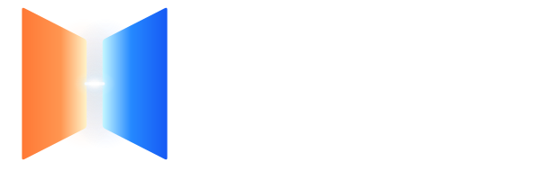
A warm source.
A cool destination. One connection.
Refined light, a focused Mac utility and a receiver designed
for the room. The approved Beam direction, carried through.
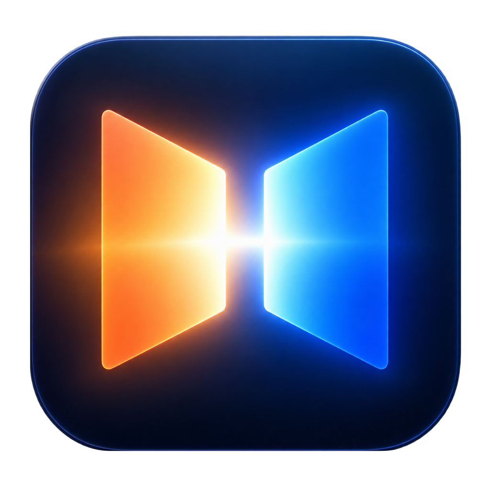
SendermacOS · warm emphasis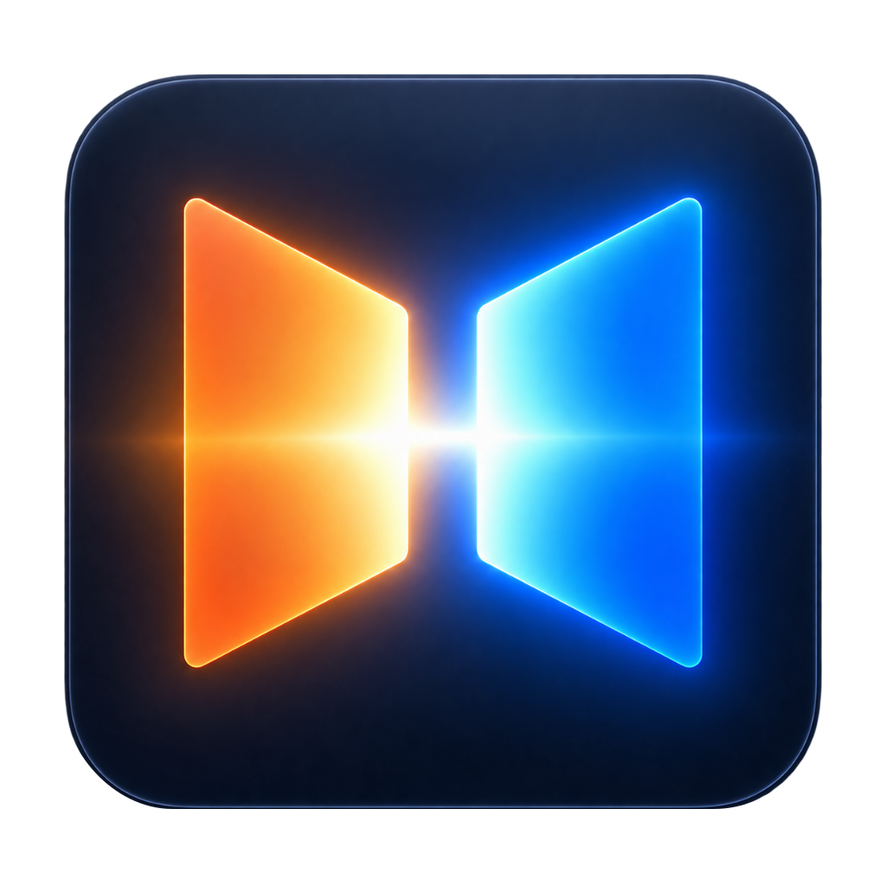
ReceiverAndroid / Google TV · cool emphasis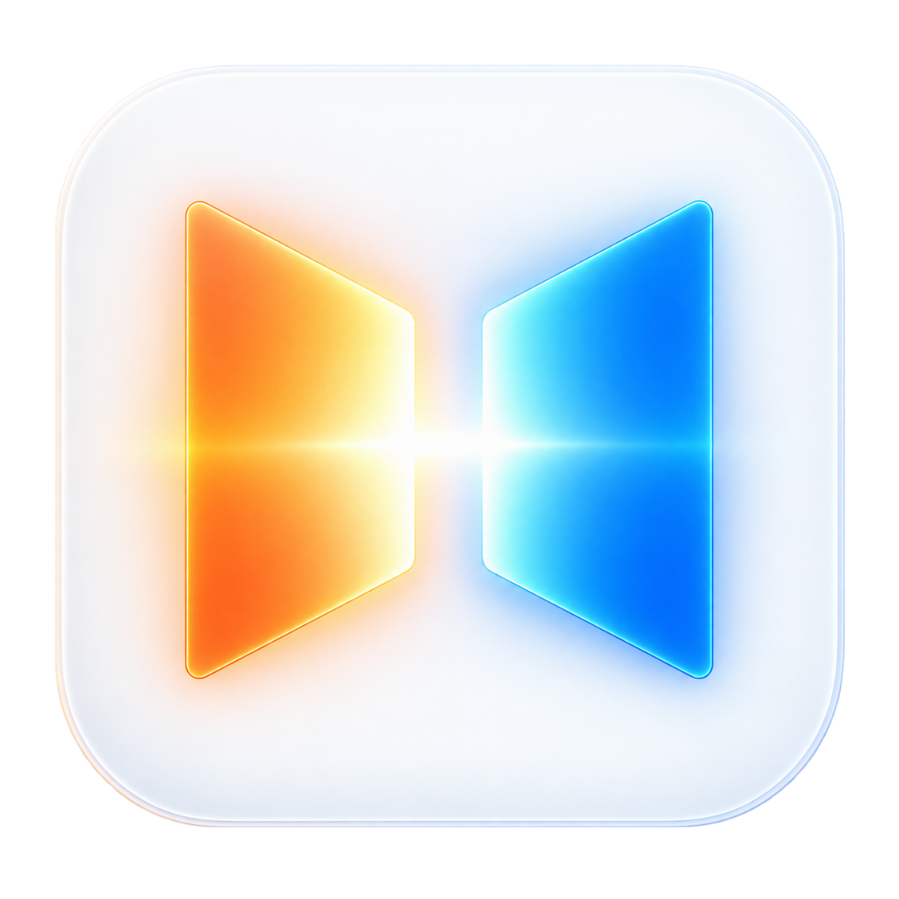
Future iOSPROPOSED / FUTUREMac · Choose TV → Choose source → Share
Native proportions. Contextual options. Pinned actions.
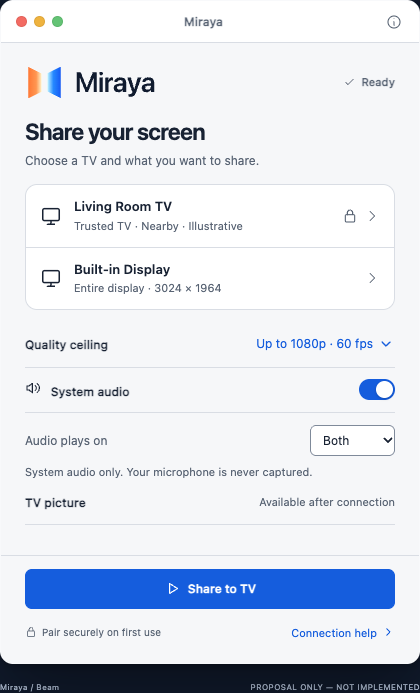
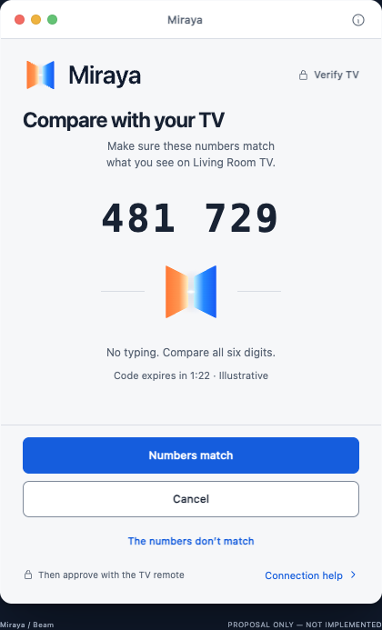
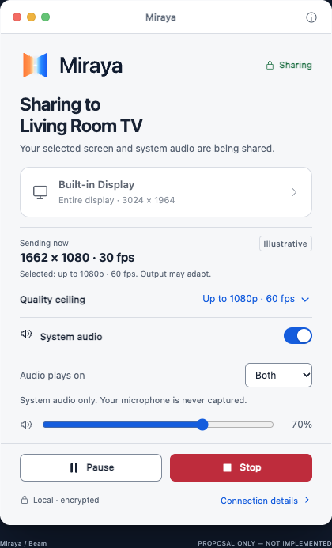
TV · Readable across the room
16:9 · 5% safe area · Remote focus · Minimal live chrome
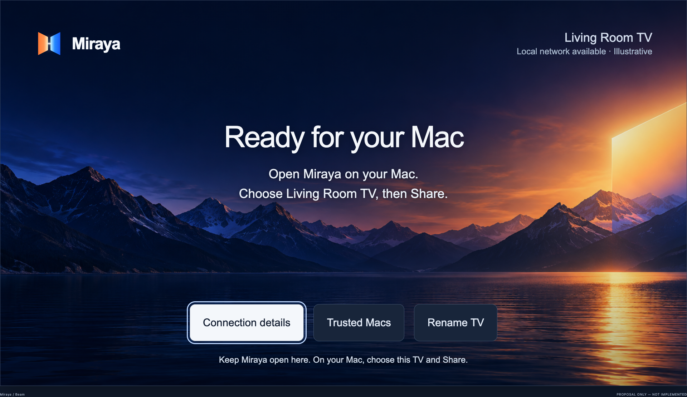
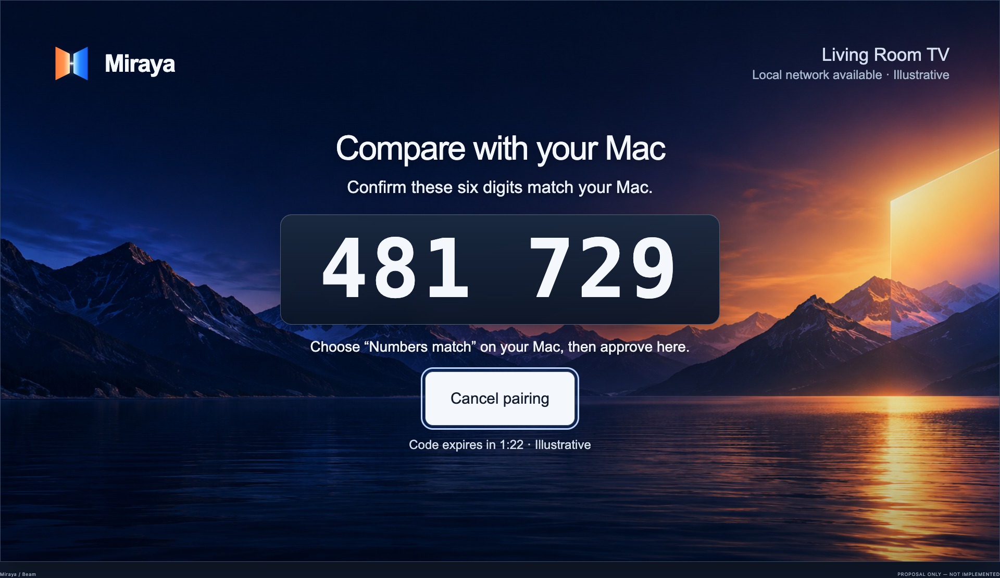
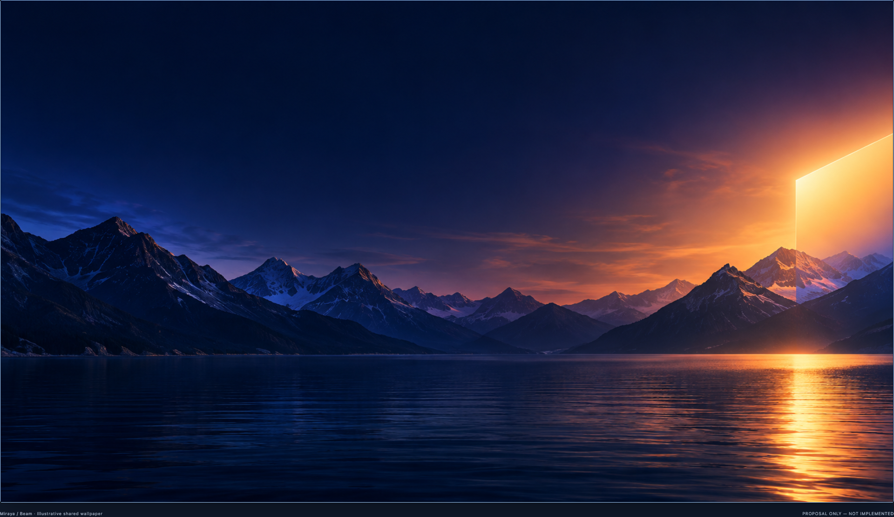
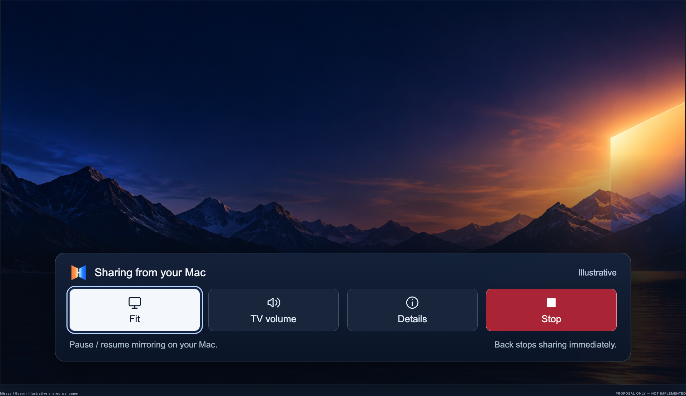
Light with purpose
Beam geometry carries connection states. Most controls stay neutral.
Compare six digits
No long-code entry. Saved trust can be removed one device at a time.
Honest quality controls
Maximums, effective output and measured network evidence stay distinct.
System audio only
Mac, TV or both. Your microphone is never captured.